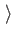
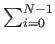

The projection of the state vector onto one of the axes of its Hilbert space shows the contribution of that axis's eigenstate to the whole state. A classical bit's state vector can only lie along one of the two axes. The state of a qubit can be any vector | X in the Hilbert space with X| X = 1; such a state vector is called normalized. The inner product of a vector | X = (x0, x1,..., xN-1)T with itself is | x0|2 + | x1|2 +...+ | xN-1|2, where | a + ib|2 = a2 + b2. More generally X| Y = xi*yi, where (a + ib)* is a - ib.
Let x1 be the eigenstate corresponding to the 1 state, and let x0 be the eigenstate corresponding to the 0 state. We can write any state | X as w0| x0 + w1| x1, where w0, w1 are the complex projections of | X onto the eigenstates such that | w0|2 + | w1|2 = 1. When the qubit with state vector X is measured, we are guaranteed to find it to be in either the state 1| x0 +0| x1 = | x0 or the state 0| x0 +1| x1 = | x1.
More generally, the Hilbert space of an N-state quantum system is
 . As with the two state system, when we measure our
N-state quantum system we will always find it to be in exactly one
of the eigenstates. The system is allowed to exist in any complex
linear superposition of the N states between measurements. An
N-state quantum system with eigenstates
x0, x1,..., xN-1 can be fully described by the vector
. As with the two state system, when we measure our
N-state quantum system we will always find it to be in exactly one
of the eigenstates. The system is allowed to exist in any complex
linear superposition of the N states between measurements. An
N-state quantum system with eigenstates
x0, x1,..., xN-1 can be fully described by the vector
Our state vector can exist in a linear superposition of eigenstates, but we can only measure the state vector to be in one of the eigenstates. When the state vector is observed, it makes a sudden discontinuous jump to one of the eigenstates. When measurement is performed the state vector is said to collapse [18]. For an N-state quantum system with a normalized state vector, the probability that the state vector will collapse into the jth eigenstate is simply | wj|2. The coefficient wj is called the amplitude of eigenstate | xj.
We can construct a quantum memory register out of the qubits described in the previous section. Just as in a classical computer, a quantum computer will perform calculations by manipulating its memory register from some start state to some final state. Note that a quantum register composed of N qubits requires 2N complex numbers to completely describe its state vector, as an N-qubit register has 2N basis states.